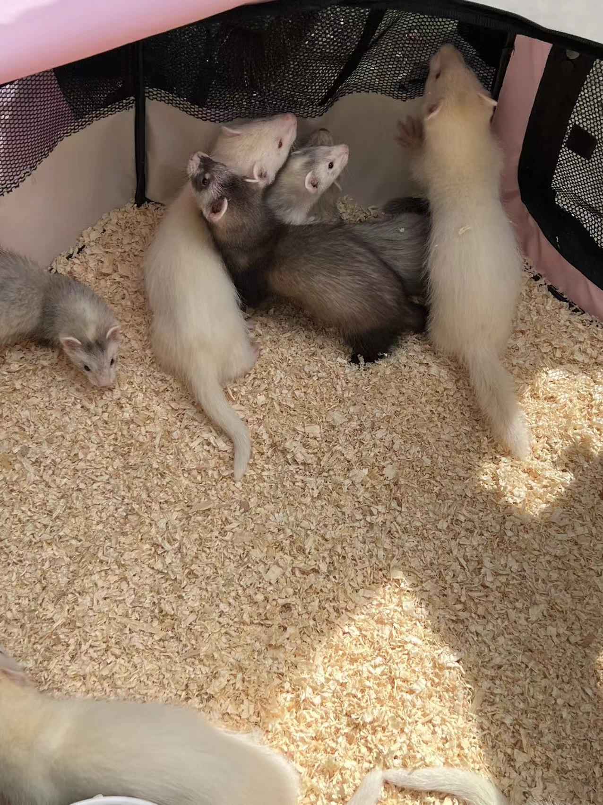
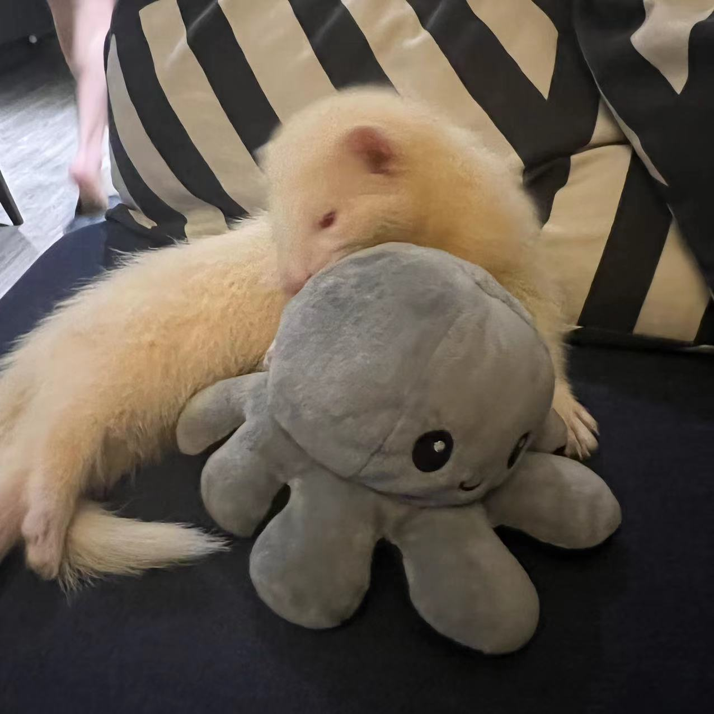
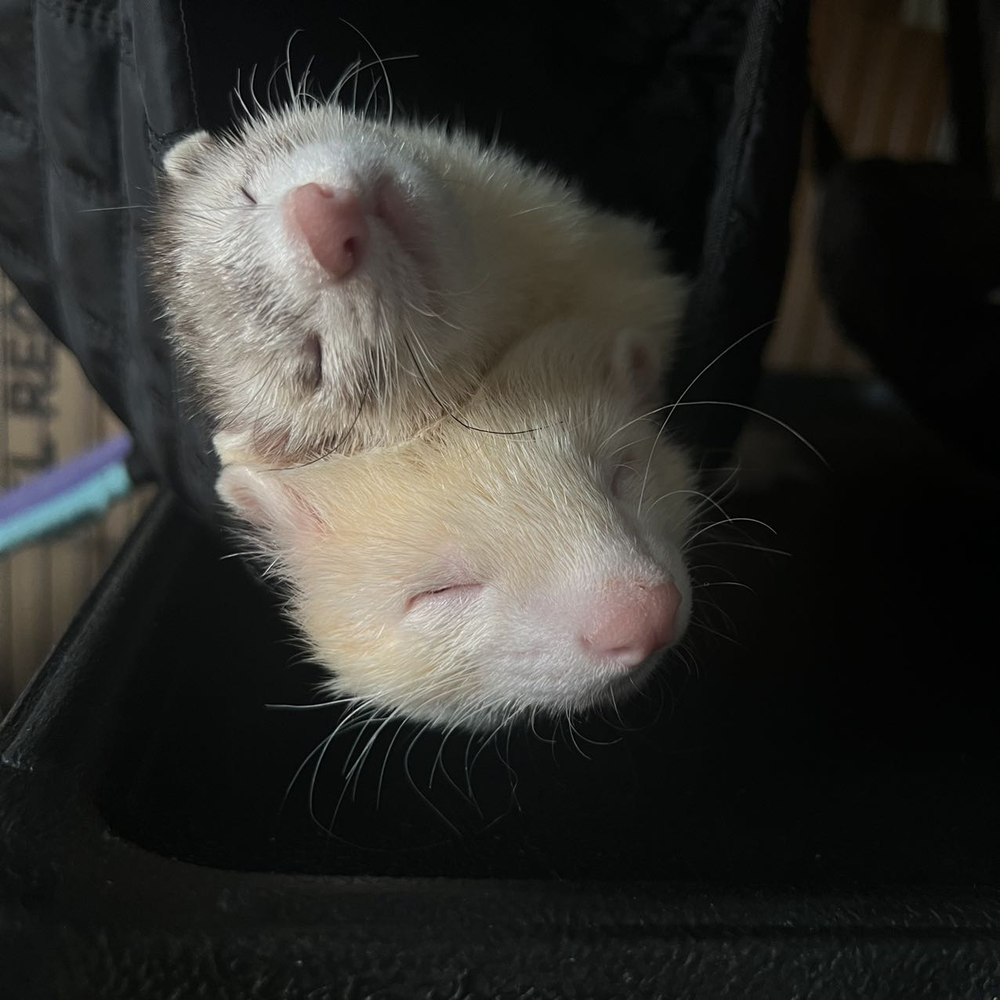
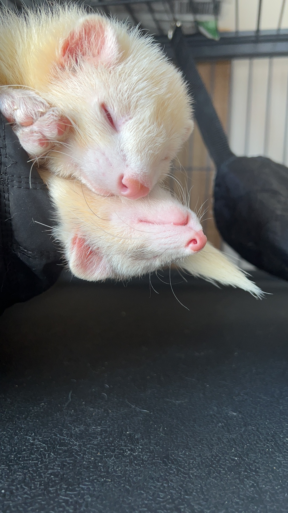
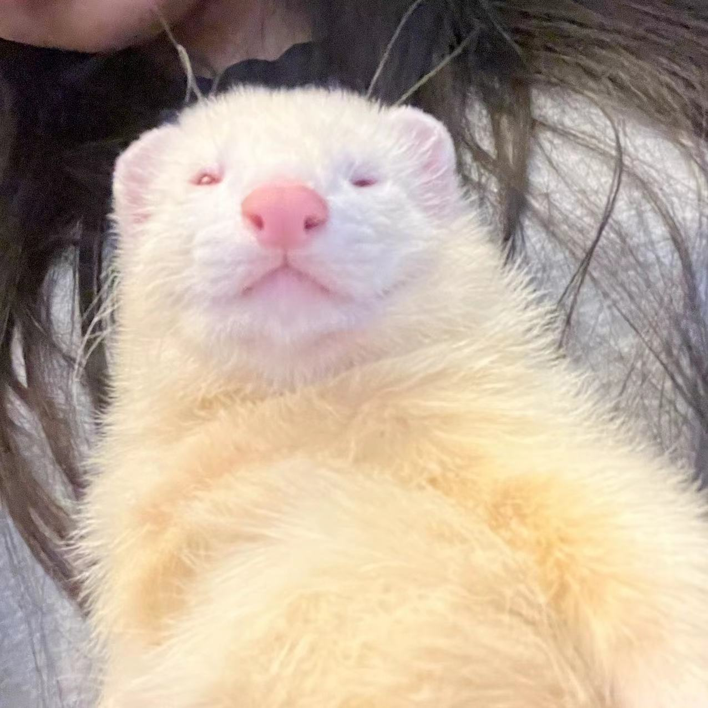
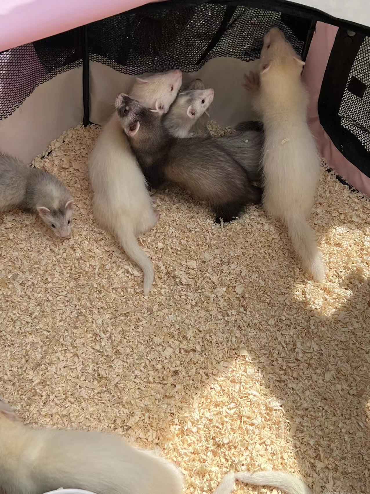
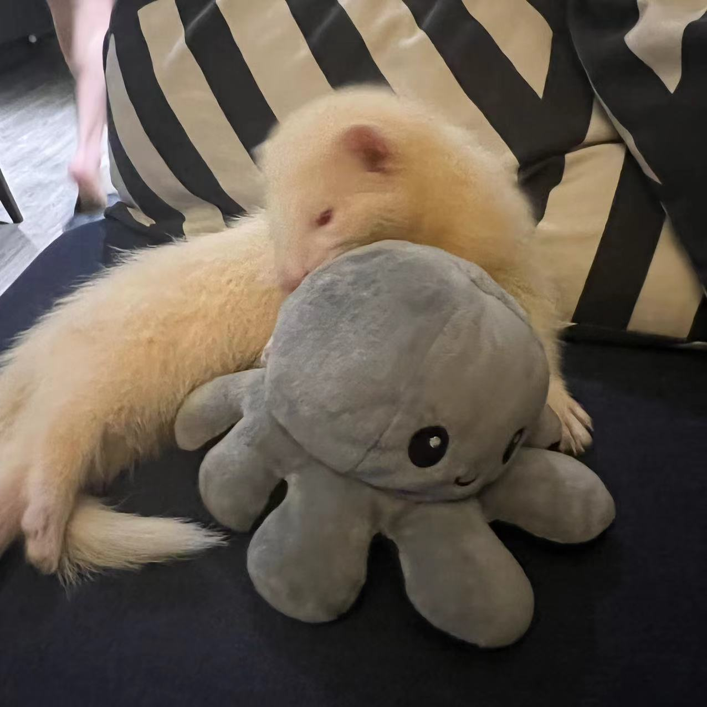
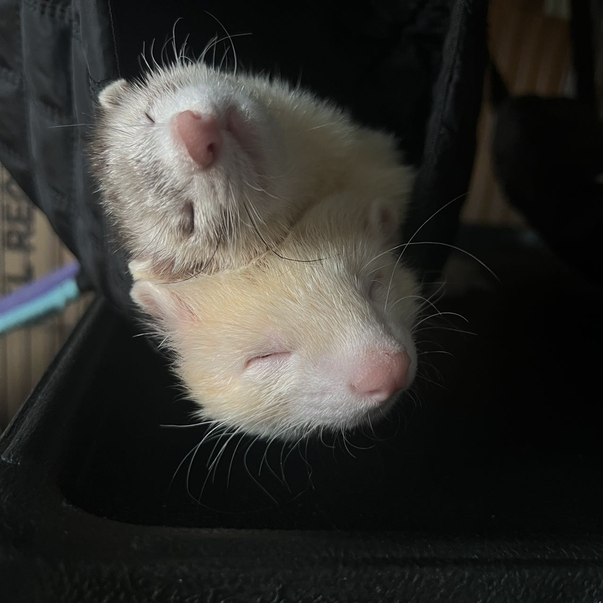
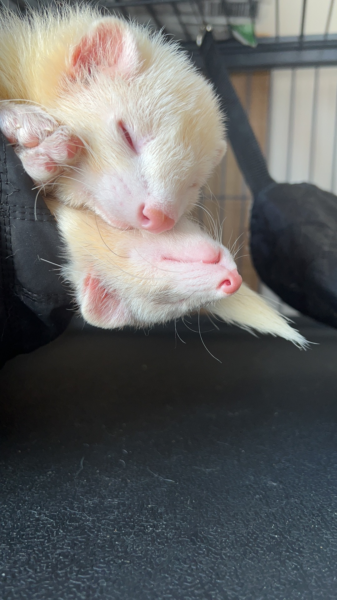
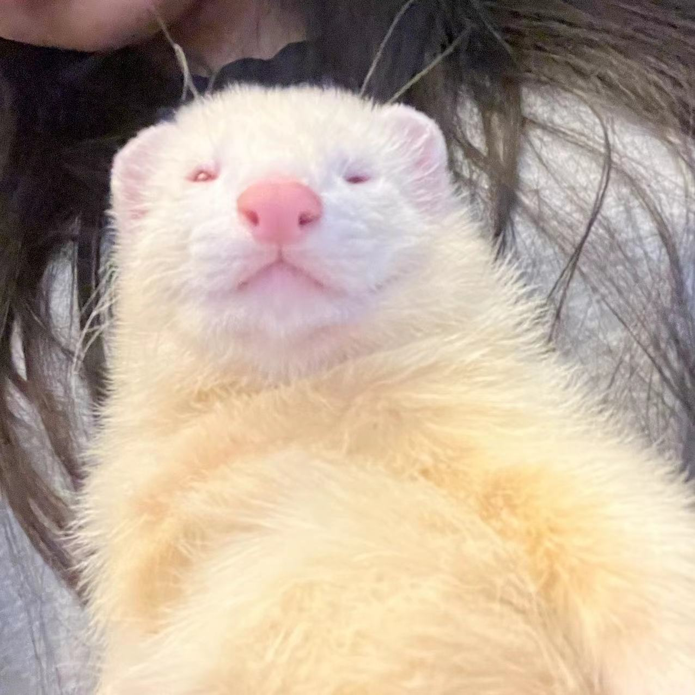

Finch and Taco
General Information on Ferrets
- Ferrets are a domesticated form of European polecat.
- Many people mistake them as beind rodents when in facct they are part of the Mustelidae family.
This means that they are related to weasels, mink, badgers, and otters.
- They are obligate carnivores and have been assisting humans for many years with hunting rabbits and rats.
- Many ferrets live on average to around 7 years, with some living up to 13.
- A male ferret is called a hob, female is called a jill and baby ferrets are called kits.
- Ferrets are incredibly flexible so many people call them noodles.
- A group of ferrets is called a business.
- Ferrets sleep at at least 18 hours per day.
Pictures
 








